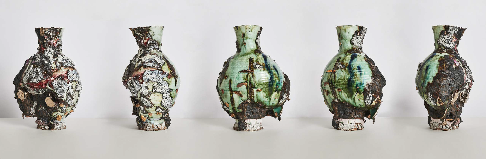
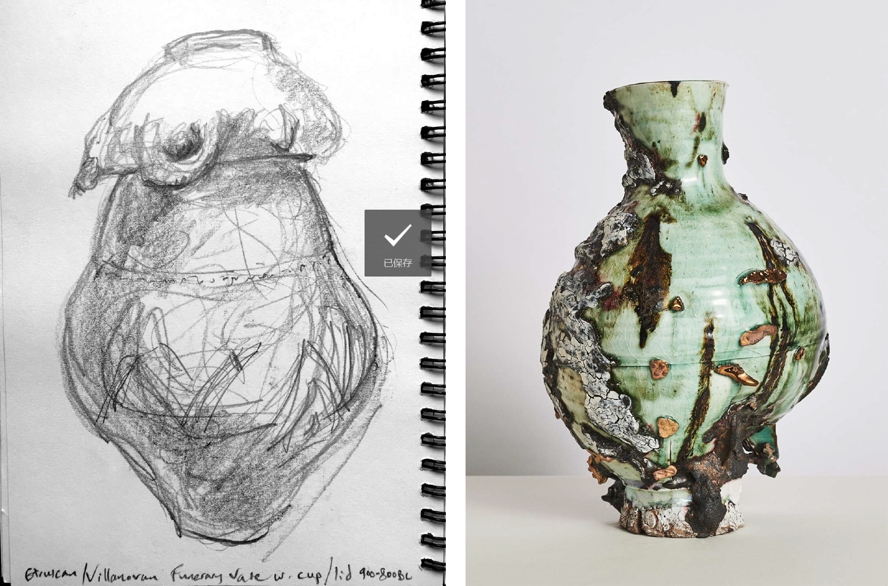
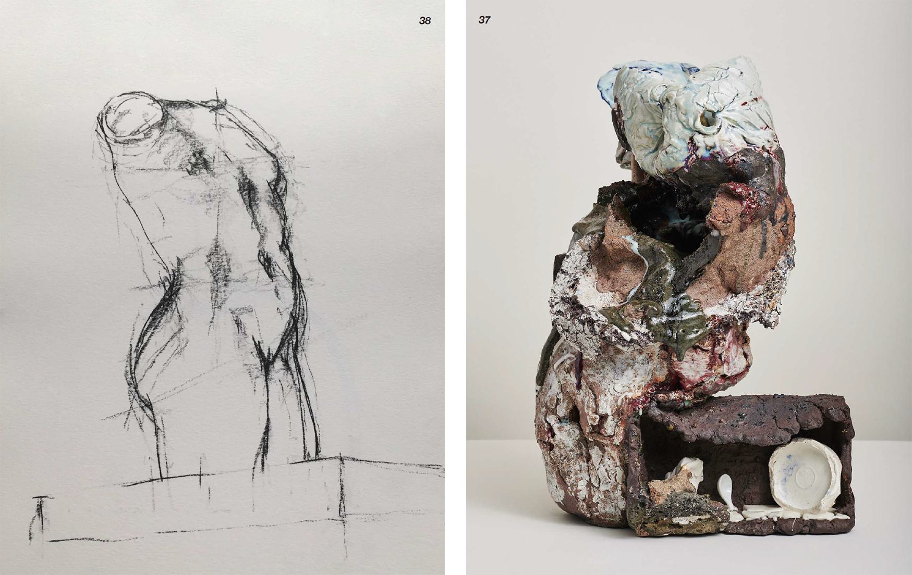
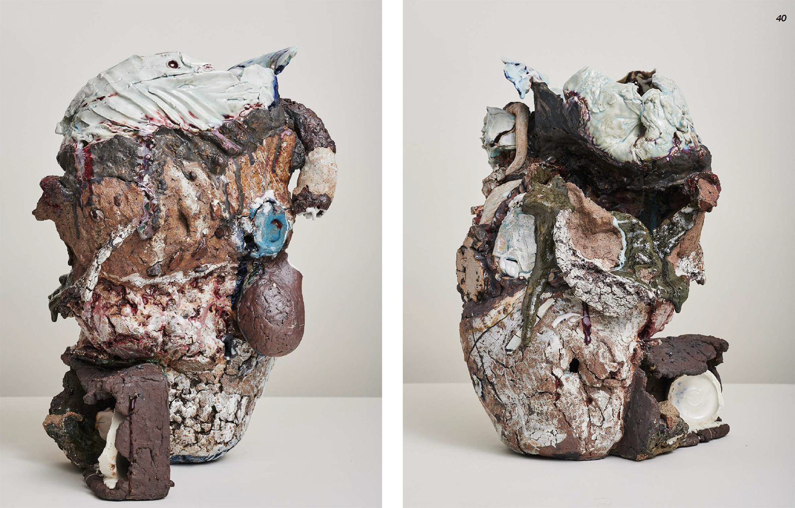
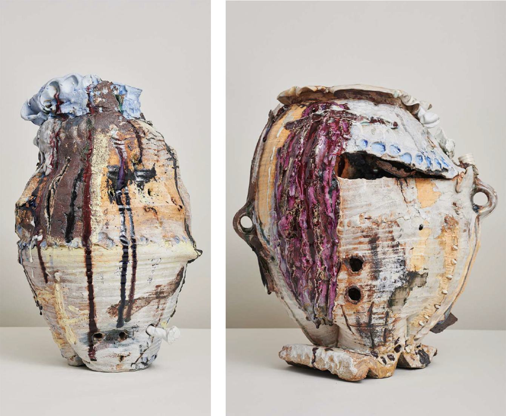
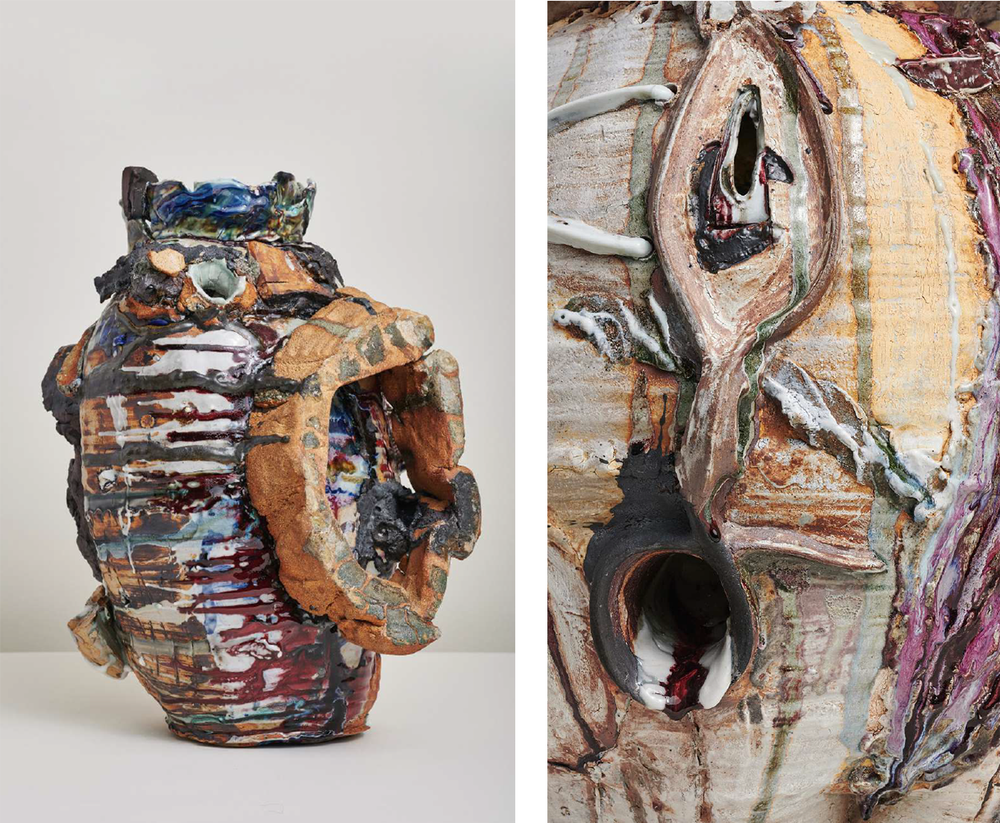

-
GARETH MASON
Gareth Mason Ceramics
Sharp Intake
2008-2011
16.93h x 11.02w x 8.66d in
Porcelain, stoneware 'mineral crust', layered glazes, slips, lustres
Tableau
2013-2018
22.44h x 14.57w x 13.78d in
Stoneware, porcelain, glazes, slips, oxides, melted brick, found objects
Boiled Owls
2015-2018
26.57h x 21.26w x 20.08d in
Stoneware, porcelain, vitreous slips, layered glazes, stains, found objects, slate, oxides, feldspar
Sharp Intake
 In transformation, qualities, undaunted (Embodying a state of constant flux; Entombed within my offering; ghosts, haunted) Reveal their hidden natures. And the crux Of revelation this practice assays Is just to deepen wonder, to remind: Believe it—we can sometimes break our stays, Eschew our locked quotidian confines. For there, beyond the membrane of our skin The sensual realm awaits. We know its call; Deny it though we may, it is our kin (Its murmurings entrance us after all). Earth, sea-change, growth: writ large in all I see, Transforming what once was to what shall be.Tableau
 'Seeing is Having', but this is not about possession. There is truth to the idea that the artist becomes what she sees, what he deeply regards. And of course what that really means is we become what we feel; what we allow in, what we permit to penetrate our fleshy bluster and resonate internally, take root there. For good and ill... In a very real way, 'we are what we eat'. And looking is loving.Boiled Owls
 Material-as-emotion; matter-as-voice; gesture-as-language: these are about the sensorial augmentation of thought. This is why I am so aesthetically greedy. Vicious, voluptuous, passionate; I want a wounding beauty. Viewed from the perspective of the senses, material qualities have distinct voices, and I pursue them all.